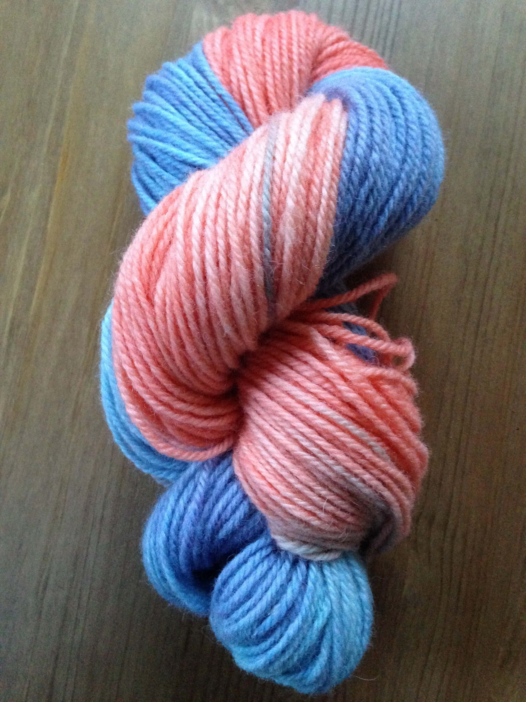
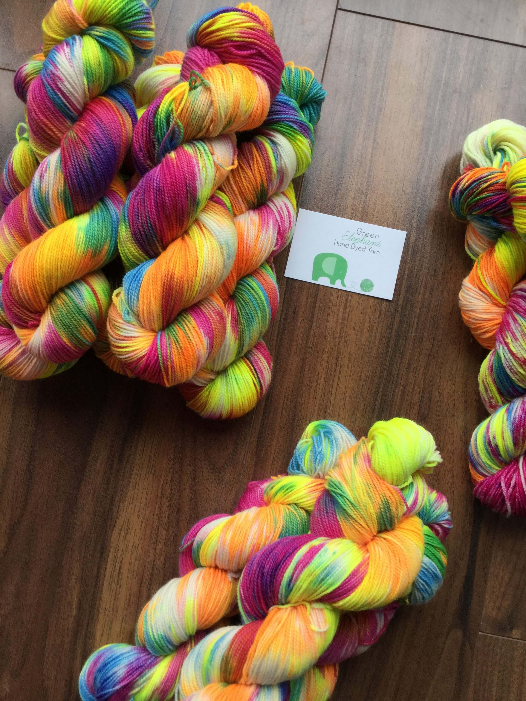

Dyeing Yarn - My Journey
Getting Started
 For me it all started with some food colouring and a microwave, and grew from there. When you realise that you can create whatever shade you want, the possibilities are endless.These were my very first results. There are so many ways to get started and you will find lots of tutorials online. You could also contact your local Guild of Weavers, Spinners and Dyers. They sometimes hold workshops of this nature, this is where I gained more experience and lots of confidence in my dyeing abilities.
Evolution
 Moving on from the microwave, over time I was able to set up a small working studio at my home. I had more capacity and was able to set up my own business. People wanted to buy yarn that I had dyed. I was over the moon!Inspiration is a funny thing, you can find it anywhere. I find colours in my surroundings are what inspires me most. I spot a colour combination, in nature, while out shopping, anywhere really. Then I try to recreate it in the dye pots. This leads to come very interesting outcomes, sometimes they are far from where they started in my mind but are much better than I could have imagined.